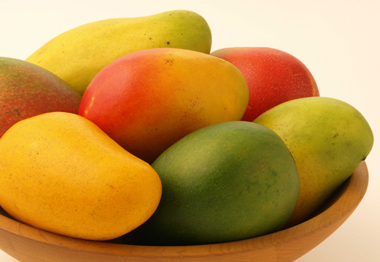

আমের পরিচিতি
গ্রীষ্মকাল যেমন প্রচন্ড দাবদাহ নিয়ে আসে তেমনি নিয়ে আসে প্রাকৃতিক ঐশ্বর্য্যের
ভান্ডার। আম হচ্ছে গ্রীষ্মের সবচেয়ে উপাদেয় উপহার। এ সময় প্রচুর পরিমাণে আম পাওয়া যায়।
আম খেতে যেমন ভালো তেমনি এর পুষ্টিগুণও অনেক। এজন্যই একে ‘ফলের রাজা’ বলা হয়ে থাকে। আম
যে শুধু খেতেই সুস্বাদু তাও নয় এটি রূপচর্চার-ও কাজে লাগে।

আম এর (ইংরেজি: Mango) এই উপমহাদেশীয় এক প্রকারের সুস্বাদু ফল। কাচা অবস্থায় এর রং
সবুজ এবং পাকা অবস্থায় হলুদ রং হয়ে থাকে। বাংলাদেশ এবং ভারত এ যে প্রজাতির(species)
আম চাষ হয় তার বৈজ্ঞানিক নাম Mangifera indica . এটি Anacardiaceae
পরিবার এর সদস্য। তবে পৃথিবীতে প্রায় ৩৫ প্রজাতির আম আছে। আমের বিভিন্ন জাত (varity)
আছে, যেমন ফজলি, ল্যাংড়া, গোপালভোগ, খিরসা, অরুনা, আম্রপালি, মল্লিকা, সুবর্নরেখা,
মিশ্রিদানা, নিলাম্বরী, কালীভোগ, কাচামিঠা, আলফানসো, বারোমাসি, তোতাপূরী, কারাবাউ, কেঊই
সাউই, গোপাল খাস, কেন্ট, সূর্যপূরী, পাহুতান, ত্রিফলা ইত্যাদী। আম গাছ কে বাংলাদেশের
জাতীয় গাছের প্রতীক হিসেবে নেয়া হয়েছে।
আমের পুষ্টি উপাদান
প্রতি ২২৫ গ্রাম আমে রয়েছে নিম্নোক্ত পুষ্টি উপাদান; যা প্রতিদিনের প্রয়োজন মেটাতে যথেষ্ট। আমে রয়েছে--- ১০৫ ক্যালরি,৭৬% ভিটামিন সি, ২৫% ভিটামিন এ, ১১% ভিটামিন বি৬ প্লাস এবং অন্যান্য ভিটামিন বি,৯% স্বাস্থ্যকর প্রো-বায়োটিক ফাইবার, ৯% কপার,৭% পটাশিয়াম,৪% ম্যাগনেসিয়াম ।
আমের উপকারীতা
০১. ক্যান্সার প্রতিরোধঃ
আমরা সবাই জানি যে প্রতিরোধ প্রতিকারের চেয়ে ভালো আর ক্যান্সারের মত রোগ প্রতিরোধ করা
তো অবশ্য কর্তব্য। গবেষণায় দেখা গিয়েছে আমের অ্যান্টি-অক্সিডেন্ট কোলন, স্তন, লিউকোমিয়া
ও প্রোস্টেট ক্যান্সার প্রতিরোধে কার্যকরী ভূমিকা পালন করে। আমে রয়ছে কেরোটিন,
আইসো-কেরোটিন, এস্ট্রাগ্যালিন, ফিসেটিন, গ্যালিক এসিড, মিথাইল গ্যালাট এবং আরো অনেক রকম
এনজাইম; যা ক্যান্সারের বিরুদ্ধে লড়াই করে।
০২. কোলোস্টেরল কমানোঃ
আম হচ্ছে ফাইবার, পেকটিন ও ভিটামিন সি এর ভালো উৎস। এসব উপাদানে রক্তে খারাপ কোলোস্টেরল
তথা লো ডেনসিটি লিপো-প্রোটিন (এলডিএল) কম করে।
০৩. ত্বক পরিষ্কারকঃ
আমের খাদ্যগুণ ভেতর থেকে ত্বকের দ্যূতিময়তা ফিরিয়ে আনে এবং ময়লয়া পরিষ্কার করে ত্বকে
আনে নতুন জেল্লা।
০৪. চোখের স্বাস্থ্যঃ
এক কাপ আম কুচি দেহের ২৫% ভিটামিন এ এর অভাব পূরণ করে। নিশ্চয়ই জানেন ভিটামিন এ চোখ
ভালো রাখতে কতটা জ়রুরী, আর বুঝতেই পারছেন আম এক্ষেত্রে কতটা সাহায্য করে।
০৫. অ্যালকালী পদার্থ সংরক্ষণঃ
আমের টারটারিক এসিড, মেলিক এসিড এবং বিবুল পরিমাণে সাইট্রিক এসিড দেহের অ্যালকালী জাতীয়
পদার্থ সংরক্ষণে অংশ নেয়।
০৬. ডায়াবেটিসের ক্ষেত্রেঃ
আম রক্তে ইন্সুলিনের পরিমাণ কমাতে সাহায্য করে। সেজন্য আগের কালের নিয়ম অনুযায়ী কিছু
পাতা পানিতে সেদ্ধ করে সারারাত ওভাবে রেখে দিয়ে সকালে ছেঁকে সে পানি পান করুন। আমে
রয়েছে তুলনামূলক কম গ্লাইসেমিক ইন্ডেক্স (৪১-৬০), যা রক্তে সুগারের ভারসাম্য বজায় রাখে।
০৭. ভিটামিন ইঃ
আমে রয়েছে প্রচুর পরিমাণে ভিটামিন ই। ভিটামিন ই দেহের জন্য খুবই উপকারী। তাছাড়া ভিটামিন
ই দেহের গোপন অঙ্গ সমূহের খেয়াল রাখে নিবিড়ভাবে।
০৮. হজমে সহায়তাঃ
আম হচ্ছে অনেক এনজাইম পূর্ণ একটি ফল। এনজাইম প্রোটিন ভাঙতে সাহায্য করে। আমের আঁশের
স্বাস্থ্যকর গুনাগুণ হজমে ও পরিপাকে সহায়তা করে থাকে।
০৯. হিট স্ট্রোক মোকাবেলায়ঃ
তীব্র গরমে এক গ্লাস কাঁচা আমের জুস আপনাকে বাঁচাতে পারে হিট স্ট্রোক থেকে। আয়ুর্বেদিক
এক গবেষণায় দেখা গিয়েছে রোদের প্রচন্ড তাপে দেহের জীবনীশক্তি ও কর্মক্ষমতা হ্রাস পায়,
ফলে মাংস পেশী নিস্তেজ হয়ে শরীরকে চলচল অযোগ্য করে তোলে। তখন কাঁচা আমের রস, পানি ও
চিনি বা গুড়ের মিশ্রণে তৈরী পানীয় আপনার জীবন বাঁচাতে এবং হিট স্ট্রোক মোকাবেলায়
অদ্বিতীয়।
১০. ইমিউন সিস্টেমঃ
আমে আছে প্রচুর ভিটামিন সি এবং ভিটামিন এ আর সেই সাথে ২৫ টির-ও বেশি রকমের
ক্যারোটিনয়েডস। যা আপনার ইমিউন সিস্টেমকে রাখে সুস্থ্য।
রাসায়নিক মুক্ত আমের বৈশিষ্ট্য
১) লক্ষ্য করুন বিক্রেতার সাজিয়ে রাখা আমগুলিতে মাছি বসছে কিনা, কারণ রাসায়নিক মেশানো
আমে কখনেই মাছি বসবে না।
(২) আমের গায়ে সাদাটে পাওডার বা চুনের মত কোন প্রলেপ আছে কি না, ফরমালিন মেশানো আম
দেখানে পরিস্কার ও ঝকঝকে সুন্দর।
(৩) গাছ পাকা আমে অবশ্যই দাগ থাকবে। কিন্তু কার্বাইড দিয়ে আম পাকালে সেটাতে কোন রকম দাগ
থাকবে না। তা হবে মসৃণ ও সুন্দর।
(৪) আমের বোটার দিক হবে হালকা হলুদ রঙের। আর রাসায়নিক মেশানো আম দেখাবে বাহারি রঙের
সম্পূর্ণ রঙিন অথবা সাদাটে।
(৫) গাছ পাকা আম নাকের কাছে নিলে সুঘ্রান পাবেন। বিপরীতে রাসায়নিক দেয়া আম থেকে কোন
ঘ্রান পাওয়া যাবে না।
(৬) পরিপূর্ণভাবে পুষ্ট আম পানিতে ডুবে যাবে। এসময় আমের আপেক্ষিক গুরুত্ব ১.০১-১.০২ এর
মধ্যে থাকবে। অপর পক্ষে পুষ্ট নয় এমন আম পানিতে ভাসবে।